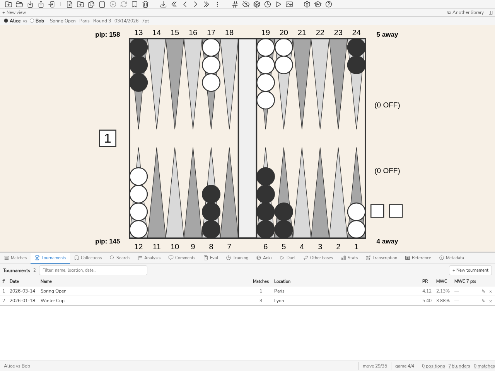

Турниры
Панель турниров


Панель Турниров: один турнир на строку, число матчей, PR эталонного игрока.
Панель Турниры (CTRL-Y) группирует матчи в турниры для организованного отслеживания и статистического анализа по событиям. Турниры можно создавать, переименовывать и удалять; матчи можно назначать им. Статистика панели Stats может фильтроваться по турниру. Нажмите CTRL-Y для отображения или скрытия панели.
Новый турнир открывает поле создания, которое получает фокус; Esc или Отмена закрывает его. Поле фильтра в полосе заголовка сужает список по мере ввода: каждое введённое слово должно встречаться в названии, месте или дате, счётчик показывает «показано / всего», а Esc очищает поле. Щелчок подсвечивает строку, двойной щелчок или ENTER открывает турнир. Его заголовок несёт дату, место и число матчей, которое щелчок превращает в список позиций турнира; справа — заметки, Провести и Итог. Ниже его матчи, по одному на строку; ▲ и ▼ меняют порядок, ⇄ меняет игроков местами, × убирает матч из турнира. Щелчок по матчу показывает под таблицей его карточку, ту же, что в панели матчей (вкладки Запись, Графики, К разбору, Подробности, Информация, Статистика); второй щелчок или Esc закрывает её, двойной щелчок или ENTER открывает матч на доске. Поле Добавить матч… помещает туда матч из базы, а ← возвращает к списку турниров.
Каждая строка начинается с номера (#) и даты, как в панели «Матчи»: список идёт от самого нового к самому старому, а щелчок по заголовку сортирует его. Турнир без даты получает дату своего самого раннего матча, показанную серым; она только читается и никогда не записывается в базу. Поле даты в форме редактирования остаётся пустым, пока в него ничего не введено: прочитанная дата показана только серым, рядом с полем, и при сохранении дата записывается лишь тогда, когда её ввели.
Турниры заполняются сами при импорте. Файлы XG, GnuBG и BGF называют своё событие; при импорте нового матча blunderDB относит его к турниру с этим названием и создаёт турнир, если его ещё нет. Место остаётся пустым, а дата — датой самого раннего матча, пока её не укажут здесь. Матч, уже находящийся в базе, никогда не переносится: повторный импорт его файла не отменяет распределения, сделанного вручную.
Столбцы PR и MWC каждого турнира показывают PR и потерю MWC эталонного игрока только по его собственным решениям. Это основной игрок базы, как только одно из его проанализированных решений учитывается в турнире, независимо от числа его матчей: он узнаётся под всеми своими псевдонимами, чьи решения суммируются. Если основного игрока нет или ни одно из его проанализированных решений не учитывается в этом турнире (непроанализированный матч), это игрок, участвовавший в наибольшем числе матчей турнира; при равенстве — принявший больше решений, затем имя, идущее первым в порядке символов (буква с диакритическим знаком после z). Таким образом, PR не смешивает вашу игру с игрой соперников: после назначения основным игроком он отражает только ваш результат в каждом из ваших турниров, даже из одного матча. Имя эталонного игрока появляется во всплывающей подсказке при наведении на значение.
Итог турнира. Кнопка Итог в заголовке открытого турнира отвечает на вопрос, который задают себе, возвращаясь с соревнования: играл ли я на своём уровне, а если нет, где он просел? По умолчанию игрок — основной игрок, если он играл в турнире, иначе тот, кто чаще всего встречается в его матчах (при равенстве — имя, идущее первым в порядке символов); меню Игрок выбирает другого. Пороги были зафиксированы до просмотра каких-либо результатов.
Обычный уровень — это данный игрок в его матчах до очков за 365 дней, предшествующих турниру (его дата, а при её отсутствии — дата его первого матча), за исключением матчей самого турнира. Считается только «до»: это уровень, с которым человек приехал. Нужно не менее 5 матчей; иначе он объявляется неизвестным.
PR и потеря MWC (экв. 7 очков) турнира в сравнении с обычным уровнем, каждый со своим 95-процентным интервалом по матчам. Вердикт — хуже, лучше, как обычно — относится к разнице и её собственному интервалу; он выносится только при наличии интервала и не менее чем 20 решений с каждой стороны, иначе читается недостаточно. Турнир из трёх матчей редко говорит «хуже»: цифры остаются на виду, вердикт ждёт доказательств.
По турам: каждый матч в порядке турнира, с соперником, его PR (интервал по партиям) и его потерей экв. 7 очков, в сравнении с обычным PR.
По порядковому номеру решения в матче, полосами по 30 решений: если конец длинных матчей обходится дороже обычного, то работать нужно над усталостью (перерывы, ритм), а не над семейством позиций.
По счёту: DMP, партия Крофорда, пост-Крофорд и прочие счета, в сравнении с теми же счетами обычного уровня — моменты, где ошибка решает матч.
По темпу: быстрые или обдуманные решения по обе стороны от медианы ваших затрат времени на этот тип решения в матче. Так читаются часы: запас времени не записывается ход за ходом.
Семейства ошибок турнира: не более трёх семейств плана обучения (см. План обучения), ограниченного ошибками турнира, с теми же правилами (5 оценённых ошибок, положительная нижняя граница); остальные считаются «требующими подтверждения». Это занятия, которые нужно запланировать в первую очередь.
stats tournament выводит тот же итог, а сервер отдаёт его через /v1/stats.tournamentReview.
Проведение турнира
blunderDB умеет проводить турнир, а не только хранить его. Проведение обеспечивает движок Nicomaque Nicolas Harmand: именно он держит формат, жеребьёвки, сетки и таблицу; blunderDB даёт ему интерфейс и хранит его матчи. Кнопка ⓘ в заголовке Direction напоминает об этом авторстве и ведёт в репозиторий и к документации движка.
Проводимый турнир выбирается на панели Панель турниров (CTRL-Y, команда direct): откройте турнир, затем Провести. Уже проводимый турнир несёт своё состояние рядом с названием, а кнопка превращается в Открыть управление. Пока управление открыто, основная область показывает турнир вместо доски — это единственное исключение blunderDB из этого правила; переход на любую другую вкладку возвращает доску. Выйти из управления в заголовке представления или Закрыть управление в панели закрывают его.
У проведения три состояния: в подготовке, пока не запущен ни один матч, затем идёт, завершён, когда турнир закрыт, а таблица зафиксирована. Закрытый турнир можно открыть заново, и это требует подтверждения: итоговая таблица перестаёт быть итоговой.
Всё решённое пишется в журнал, и больше ничего. Таблица, сетки, предложения и предупреждения воспроизводятся из этого журнала при каждом открытии: отключение электричества не стоит ничего, а исправление никогда не стирает случившееся — оно добавляется.
Страница проведения
Здесь директор проводит большую часть времени. Сверху вниз: предупреждения движка, которые остаются на виду и никогда ничего не блокируют; сетка столов, в заголовке которой находится кнопка Напечатать лист жеребьёвки; последнее решение; очередь предложений; и свободные игроки. Сетка идёт перед очередью: длинная очередь никогда не вытесняет её с экрана. С клавиатуры первая остановка TAB на странице — «К очереди»: она переводит фокус на очередь, минуя сетку; под заголовком очередь напоминает свои сочетания клавиш (J и K, ENTER, ВЛЕВО и ВПРАВО).
Вид занимает всю ширину основной области, и каждая вкладка прокручивается отдельно: если уйти с вкладки и вернуться или перейти от одного состязания к другому, позиция прокрутки сохраняется. Кнопки и поля имеют высоту не менее 44 пикселей, чтобы попадать в них без точности за стойкой; число столбцов сетки следует ширине области, а не окна. В Настройках каждый раздел сворачивается до своего заголовка, а кнопка Открыть в браузере в Настройках и кнопка Настенная страница в заголовке открывают настенную страницу одним щелчком, как только выбрана выходная папка; строка состояния показывает путь записанного файла. Регистрация, опоздавший, следующая фаза, жеребьёвка, запуск матча и закрытие тоже оставляют здесь отклик («Sophie Martin зарегистрирована — 16 зарегистрированных»).
Управление турниром открывается на Игроках, пока турнир не начат, затем на вкладке Управление, а при повторном открытии — на вкладке, где его оставили. После перезагрузки или перезапуска приложения последнее открытое управление открывается само, на той же вкладке. Второй щелчок по Управлять или Открыть управление, пока вид загружается, игнорируется.
Предложенный тур можно объявить до запуска: Следующий тур… рядом с Напечатать лист спрашивает дату и время для печати («понедельник 21.09, 20:00») и печатает лист пар из очереди с пометкой «объявлен». Ничего не запускается и не пишется в журнал: тур запускается в свой день, в своё время. У пары, ждущей свободного стола, вместо номера стола стоит прочерк.
Вверху вида турнира полоса часов умещается в одну строку: время, время с запуска первого матча, сыгранные и идущие матчи, наблюдаемый темп в минутах на очко против планового, медленные матчи, следующий перерыв и ожидаемый конец. Ожидаемый конец — это прогноз движка: он воспроизводит журнал, доигрывает турнир пятнадцать раз в плановом темпе, и полоса показывает медиану, сдвинутую за объявленные перерывы. Поэтому ночь, не объявленная перерывом, считается игрой. Время не сегодняшнего дня показывается со своим днём.
Со второго дня прошедшее время уступает место игровому дню (день запуска первого матча — день 1) и игровому времени: времени, когда шёл хотя бы один матч, без ночей и промежутков, когда не играл ни один стол. У закрытого турнира полосы часов больше нет.
Предложение подтверждается одним щелчком по Запустить. Запустить всё подтверждает в два щелчка предложения, у которых есть стол, показав сначала их список; Подтвердить стоит в начале этого списка. Пары без стола остаются в очереди с пометкой «нет свободного стола»: в режиме раундов раунд остаётся открытым, пока в нём не заняты все его игроки. Замена между игроками с равным результатом тоже ждёт выбора директора, а вместе с ней и переход к следующей фазе. «Пропустить пока» ничего не пишет: движок детерминирован, и предложение вернётся тем же при следующем обращении. Составить пару вручную доступно всегда — движок предлагает, директор решает.
Матч, составленный вручную без номера стола, получает первый свободный стол; стол, за которым идёт матч, отклоняется. Если все столы заняты, матч всё равно начинается, а его ячейка появляется в конце сетки как «без стола», пока его не переведут за стол.
Предложение может нести замечание движка: нет свободного стола или ожидаемое окончание матча приходится на перерыв. В обоих случаях его по-прежнему можно запустить. Когда фаза работает микротурами, очередь показывает время до следующей партии; по наступлении срока предложения появляются сами, и ничто не запускается самостоятельно.
Карточка результата
Щелчок по занятому столу открывает карточку матча. В ней две крупные цели: имена двух игроков. Щелчок по победителю записывает результат — два щелчка всего, включая стол. Победитель — единственное обязательное; счёт свободен: один, оба или ни одного. С клавиатуры ВЛЕВО или ВПРАВО выбирает победителя, а ВВОД записывает его. Карточка закрывается, только когда результат записан: при ошибке она остаётся открытой, с сообщением.
Кнопка ⋯ карточки раскрывает то, что нужно редко: неявку (форфейт) — каждая кнопка называет отсутствующего и того, кто выигрывает —, свободное примечание («вышло время», «прекращён по причине…»), перенос матча за другой стол и его отмену. Неявка и отмена подтверждаются; неявка — кнопкой Объявить неявку, которая в той же карточке предлагает также снять проигравшего. При переносе за занятый стол матч меняется столом с тем, кто его занимает: два матча никогда не делят стол, и тот же жест возвращает их на место. Если старый журнал оставил два матча за одним столом, сетка показывает обе ячейки с пометкой, пока один из матчей не перенесут.
Замеченную сразу ошибку ввода можно вернуть в два щелчка под сеткой: Исправить последнее решение, затем правильного победителя (CTRL-Z открывает ту же правку). Более старое исправление делается из истории.
Полный экран
Клавиша F11 на странице «Руководство» или кнопка внизу справа переводит её в полноэкранный режим: панель инструментов, вкладки, доска, панель и строка состояния исчезают, а всё окно отдаётся руководству турнира. Режим сохраняется при переключении вкладок руководства (Руководство, Игроки, История, …). Открытое меню или карточка сначала закрываются клавишей ESC; второе нажатие ESC или F11 выводит из полноэкранного режима и возвращает окну прежнее состояние. Выход со страницы, сменой вкладки приложения или закрытием руководства, также завершает режим.
Быстрый поиск
Клавиша / на странице Direction открывает палитру только на турнире: игроки, столы, идущие матчи и состязания открытого мероприятия, а если состязание не входит ни в одно мероприятие — только его. Вводится имя, клуб или номер стола («4» или «t4»); игроки за столом идут раньше свободных. ВВОД ведёт к объекту: игрок в матче, матч или занятый стол открывают карточку стола, свободный стол получает фокус в сетке, свободный игрок показывается на вкладке Игроки, отфильтрованный по имени, состязание становится текущей вкладкой. Результат из другого состязания мероприятия сначала переключает состязание. ESC закрывает, ничего не открывая, а в поле ввода клавиша остаётся косой чертой. CTRL-SHIFT-P открывает полную палитру, где турнир тоже есть.
Игроки
Вкладка Игроки записывает, исправляет и снимает. Поле записи сохраняет фокус и очищается после каждого имени: двадцать игроков записываются с одной клавиатуры. Автодополнение предлагает игроков базы; выбор одного закрепляет точное написание, которое несут его матчи, и подставляет его PR как рейтинг.
Справочник собирает участников всех проводимых турниров базы, без повторов по имени, с клубом и рейтингом их последней записи. Он никогда не хранится: удаление проведения убирает из него его участников. Взять участников предыдущего турнира — один щелчок, сколько бы их ни было; справочник копируется в CSV или сохраняется в файл (Сохранить…) и читается обратно из буфера.
Парный турнир регистрирует пары: флажок Пара добавляет имя, клуб и рейтинг партнёра. Пара играет под именем «A / B», которое носят и её матчи; её рейтинг — среднее двух, а значение, введённое в Рейтинг пары, заменяет его. Справочник хранит двух человек, но никогда не пару.
Перед кнопкой Записать предпросмотр вставленного CSV перечисляет нечитаемые строки — без имени, без разделителя, когда в остальных строках он есть, рейтинг, не являющийся числом, — и дубликаты, внутри вставки или с уже записанным игроком. Дубликат не записывается, если не отметить его флажок.
Поле фильтра списка сохраняет свой текст при смене состязания: пока фильтр активен, рядом отображается метка фильтр: …, а её крестик стирает его.
Опоздавший, пришедший после жеребьёвки, занимает свободное освобождение от игры, если сетка его предлагает, и интерфейс пишет рядом с полем, куда он войдёт, до подтверждения. Если свободного места нет, он всё равно записывается, и вид сообщает, в какую фазу он войдёт. Уже проведённая жеребьёвка никогда не переигрывается.
Снятие происходит сейчас или после текущего матча, в зависимости от того, уходит игрок сразу или доигрывает; оно подтверждается кнопкой Снять, не красной, поскольку ничего не удаляется.
Игрока, пропускающего тур, не обязательно снимать: Отметить отсутствие на его строке открывает небольшую форму под именем — до определённого времени (по умолчанию — следующий час) или, если текущий этап — швейцарская система по турам, до тура с его номером. Движок просто перестаёт его расставлять по парам, но его место, жизни и позиция в турнирной таблице остаются такими, какие он заработал — отсутствие не является поражением по неявке. Вернуть на его строке снимает отсутствие одним щелчком, до или после объявленного срока.
Исправление карточки снявшегося игрока — имени, клуба, рейтинга — оставляет его снявшимся. Возвращение — отдельное действие: Вернуть в его строке. Он снова участвует в жеребьёвке, с результатами и жизнями, которые были у него при уходе; матчи, проигранные неявкой при снятии, остаются проигранными.
Участник, прошедший из группы и выбывший до жеребьёвки следующей фазы, освобождает место. Тогда очередь предлагает замену: следующий в его группе, не прошедший и не выбывший, с наибольшим числом побед в группе, занимает его место. Среди игроков с равным результатом очередь предлагает каждого из них, и директор выбирает; «Следующая фаза» без замены оставляет место свободным от игры. После жеребьёвки сетки выбывший проигрывает свой матч неявкой.
Сетки, места, таблица, история
Вкладка Сетки рисует сетки вместе с соединительными линиями, от первого раунда до финала, с утешительной сеткой рядом с основной и, для швейцарской системы, таблицей жизней. Группа читается как перекрёстная таблица результатов. Ещё не разыгранная сетка показывает свой серый каркас. Сыгранный матч несёт свой результат; матч, отмеченный движком, помечается на месте. Точка рядом с названием вкладки показывает, что сетка в процессе.
Щелчок по месту (или Enter на выбранном месте) открывает на нём ту же карточку, что и в сетке столов: победитель идущего матча вводится двумя щелчками, а завершённый матч исправляется щелчком по имени настоящего победителя.
Вкладка Матчи (озаглавленная «Места») связывает турнир с библиотекой. Каждый матч турнира — это место, которое можно заполнить двумя способами: транскрибировать матч сразу (Панель записи) или прикрепить к нему уже импортированный матч. Ничто не прикрепляется по догадке: совпадение имён — это предложение, которое нужно принять, частичное совпадение даже не предлагается, а если файл прикреплённого матча противоречит записанному результату, расхождение показывается, но не разрешается — во время турнира слово директора решающее.
Вкладка Таблица показывает текущую таблицу, раздел за разделом, с итогом каждого (победы–поражения) и призами, когда настроен призовой фонд. Шкала в процентах выплачивается целыми единицами по методу наибольшего остатка: каждая сумма усекается до единицы, затем единицы, недостающие до округлённой суммы к распределению, по одной достаются местам с наибольшей дробной частью (при равенстве — более высокому месту); шкала в фиксированных суммах выплачивается как есть. Двое с равным результатом делят место и приз. Выбывший игрок сохраняет место, которое ему обеспечивает его путь, с пометкой «выбыл» и его итогом или местом в сетке, где он остановился. Завершить турнир фиксирует итоговую таблицу. Таблицу можно скопировать в CSV на языке интерфейса, с разделом и последней фазой, в которую вышел каждый, или сохранить в файл: Сохранить… открывает системный диалог с предложенным именем — название турнира, слово «таблица» и сегодняшняя дата, — и файл содержит ровно скопированный CSV. В командной строке blunderdb tournament standings пишет тот же CSV. Имя игрока — это ссылка: она открывает Историю, отфильтрованную по нему, где исправляется каждый его результат.
Закрыть турнир без идущих матчей — один щелчок; когда всё сыграно, очередь также предлагает Завершить турнир, который запускается как любое другое предложение. Если матчи идут, Таблица говорит, сколько их, и ждёт второго щелчка на месте: закрытие фиксирует таблицу без них, и их результат больше не вводится. Открыть снова подтверждается так же; итоговая таблица перестаёт быть итоговой, а переоткрытие остаётся в журнале.
Вкладка История — это журнал открытым текстом: одна строка на решение, по порядку, с фильтром по игроку или матчу. Это то, что директор перечитывает после спора, и там же старое решение исправляется или комментируется. Строка результата называет обоих игроков: победителя и его соперника.
Исправить в строке результата открывает под ней ту же правку, что и для последнего решения: щёлкнуть правильного победителя, при необходимости со счётом. Исходный результат остаётся на своём месте в журнале, исправление добавляется к нему, и таблица сразу его учитывает.
Настройки
Вкладка Настройки открывается именованными форматами: шесть готовых клубных турниров, первый из которых рекомендован. Выбрать один достаточно, чтобы начать; поля остаются изменяемыми и потом.
Здесь настраиваются: фазы (Добавить фазу добавляет её после остальных; уже открытая фаза не удаляется) и длина их матчей, длина финала, длины по турам для сетки («15, 13, 11» читается от последнего тура к первому), длина завершения (более длинные матчи начиная с некоторого числа оставшихся в игре игроков), микро-раунды (жеребьёвка пакетами каждые N минут), число столов, предполагаемый темп в минутах на пункт (по умолчанию 8; от него считаются полоса часов и ожидаемое окончание), перерывы дня, призовой фонд (взнос, удержание клуба, шкала по разделам) и папка отображения.
У сетки три флажка: Утешительная (её проигравшие играют вторую сетку — отдельный раздел в таблице), Примирение (победитель утешительной играет с победителем основной сетки; флажок появляется только вместе с утешительной) и Перезарядка (при двойном выбывании победителя основной сетки нужно обыграть дважды; флажок появляется только вместе с примирением). Своя таблица у утешительной есть только при шкале призов: пока шкала раздела Утешительная пуста, Настройки напоминают об этом. Фаза Группы настраивается размером групп (по умолчанию 4) и числом проходящих из группы (по умолчанию 2).
Порог швейцарской фазы — это сумма оставшихся жизней, начиная с которой переходят к сетке. Если сумма начальных жизней (игроки × жизни) уже меньше порога или равна ему, швейцарская фаза была бы пропущена: Настройки сообщают об этом до первого запуска.
Настройки остаются доступными во время турнира: понизить порог в 22:00, чтобы закончить раньше, добавить утешительный турнир в субботу вечером, пока жеребьёвка сетки не проведена. То, что к этому моменту зафиксировано, показано серым с указанием причины: формат открытой фазы, число выданных ею жизней и, после жеребьёвки фазы, размер её групп и число выходящих из них. Сохранение во время турнира сначала показывает список того, что изменится, и просит подтверждения. То, что движок отклоняет, указано там с причиной, и тогда ничего не сохраняется: так происходит с утешительным турниром, примирением или перезарядкой уже разыгранной сетки.
Стол со сломанной доской указывается в поле Столы вне игры: его номера через запятую («7, 12»). Движок больше его не назначает, а сетка показывает его недоступным; уменьшение числа столов убрало бы последний стол, а не сломанный. Если на столе, выведенном из игры, идёт матч, список изменений говорит об этом и называет свободный стол, куда его можно перенести из карточки матча.
Посев — необязательная возможность, по умолчанию выключенная: исследование движка приходит к выводу «без защищённого посева», что соответствует нынешней культуре нардов. Включённый, он расставляет игроков по рейтингу.
Состязания мероприятия
Несколько состязаний на одних и тех же столах — основное, спид, парное — объединяются в Мероприятие в начале Настроек (свёрнутое до заголовка, когда состязание к нему присоединено; кнопка Настройки мероприятия вкладки Все столы ведёт туда): Создать и присоединить… создаёт мероприятие с числом столов, Присоединить… добавляет в него управляемое состязание. Присоединение сначала показывает, что изменится: столы состязания становятся столами мероприятия. Отсоединить от мероприятия возвращает состязание самому себе, с его журналом и столами; Удалить мероприятие, после подтверждения, отправляет его в корзину и отсоединяет состязания, не удаляя ни одного.
В мероприятии ни одно состязание не предлагает стол, за которым играет другое: сетка показывает такие столы занятыми, с названием состязания, а пара без свободного стола ждёт. Неисправный стол отмечается один раз, в мероприятии, и действует для всех его состязаний; число столов, неисправные столы и перерывы, изменённые в Настройках одного состязания, действуют и для мероприятия, а список изменений называет другие состязания.
Свойства столов задаются в панели «Мероприятие»: таблица с одной строкой на стол, с его названием (например, «Stream»), его залом (произвольная метка), флажком Зарезервирован и игроками, за которыми он Закреплён, выбираемыми среди участников состязаний мероприятия. Для сорока столов Столы с N по M, зал задаёт зал сразу для всего диапазона; Сохранить записывает только столы, имеющие какое-либо свойство, остальные остаются обычными столами. Зарезервированный стол никогда не предлагается, но матч можно поставить на него вручную — запуском, перемещением или перетаскиванием. Закреплённый стол первым получает матч своего владельца, когда свободен; иначе матч получает обычный стол, а вне матчей своих владельцев он ведёт себя как зарезервированный. Два владельца разных столов, встречаясь, играют за меньшим из двух.
Зал — это множество столов с одной и той же меткой: «зал A» для столов с 1 по 20, «зал B» для следующих. В Настройках каждого прикреплённого состязания пункт Залы, где играет это состязание отмечает залы, где оно играет: DMP в B, speed в A. Если ни один флажок не отмечен, это все столы; состязание не получает предложений вне своих залов и не может переместить туда матч. Удаление зала, где идёт матч этого состязания, отклоняется с указанием стола. Состязание, которое играет отдельно, задаёт те же свойства столов в собственных Настройках, без залов состязания.
Сезонный рейтинг в панели «Мероприятие» суммирует завершённые состязания мероприятия: каждое место приносит очки Шкалы (победитель первым, по умолчанию 25, 18, 15, 12, 10, 8, 6, 4, 2, 1), а разделившие место делят среднее из занимаемых ими мест. Человек узнаётся от состязания к состязанию по имени. Клубный Elo добавляет столбец: каждый начинает с 1500, а матчи сезона переигрываются по порядку по формуле FIBS. Рассчитать показывает рейтинг, Копировать как CSV копирует его с одним столбцом очков на состязание. Незавершённое состязание ничего не приносит.
Открытие Direction состязания мероприятия открывает и остальные: в верхней части Direction появляется вкладка на каждое состязание, каждая со своей сводкой — ожидающие предложения, идущие матчи, тревога, если она есть. Переключение состязания — щелчок по его вкладке, без подтверждения; покинутое состязание не закрывается и ничего не проигрывает заново, оно остаётся таким, каким его оставили. Турнир вне какого-либо мероприятия имеет одно состязание: показывать вкладки не нужно. Если переключиться на другую вкладку приложения и вернуться к «Турнирам», Direction предстаёт такой, какой её покинули: то же состязание или Все столы и та же вкладка вида.
Вкладка Все столы, слева от турниров, показывает все столы мероприятия в одной сетке: одна клетка на стол, какой бы турнир его ни занимал, с названием и цветом этого турнира. Карточка результата, контекстные меню, клавиатура и перетаскивание работают там так же, как в сетке турнира, и каждое действие направляется турниру своей клетки. Перетаскивание матча на стол другого турнира меняет два матча местами после подтверждения, называющего оба турнира. Под сеткой предложения всех турниров образуют одну очередь, каждое с меткой своего турнира и своей кнопкой Запустить: игроки, ждущие дольше всех, идут первыми, так что один турнир не ждёт конца тура другого. Матч без стола — все столы заняты или игрок занят матчем другого турнира — следует в очереди со своей причиной, без кнопки Запустить, пока не освободится стол или игрок. Щелчок по турниру или по вкладке вида покидает Все столы.
Когда в мероприятии несколько залов, сетка группируется по залам, под названием каждого. Название стола показывается рядом с его номером, с флажком для зарезервированного стола и звёздочкой, за которой следуют владельцы, для закреплённого стола; предложения тоже называют стол.
Один и тот же человек может играть в нескольких турнирах мероприятия: два Участника с одинаковым именем — один человек, а в паре парного разряда учитывается каждый из двух членов. Пока он играет в одном турнире, другие его не предлагают, и их список Ожидают говорит, где он играет: «играет в основном, стол 4». Матч сетки, который его ждёт, остаётся в очереди, и его запуск отклоняется, пока он играет. Ручное составление пар остаётся разрешённым: матч начинается, и его клетка в сетке несёт ту же отметку.
Показ турнира
На турнир смотрят. Достаточно один раз выбрать папку экрана в настройках: blunderDB переписывает там самостоятельную HTML-страницу при каждом изменении, и страница перезагружается сама. Она открывается офлайн, на втором экране или через проектор, и не загружает никаких внешних ресурсов. Открыть в браузере показывает её сразу.
Игроки могут также следить за турниром со своего телефона. В Настройках Дирекции раздел Показать в сети клуба запускает небольшой веб-сервер на машине директора (порт 8770 по умолчанию, можно изменить) и показывает QR-код его адреса, а рядом — адрес открытым текстом: телефон, подключённый к той же сети, сканирует его и видит страницу показа этого турнира — сетку, пары, результаты, таблицу. Страница обновляется сама каждые десять секунд; введённый результат появляется на ней без всяких действий. Открыть на этом компьютере открывает её в браузере рабочего места. Остановить показ закрывает сервер, который также останавливается при закрытии blunderDB.
Показ выключен, пока директор его не включит, и он только для чтения: он отдаёт лишь страницу этого турнира, никаких других данных базы, и ввести в нём ничего нельзя. Пароля нет: любой в локальной сети может прочитать страницу (имена, пары, результаты) — то, что настенный экран и так показывает залу. Сервер слушает только на предложенном адресе и на этой машине. На машине, подключённой к нескольким сетям, список предлагает её адреса: сначала адреса частных сетей (192.168.x.x, 10.x.x.x, от 172.16.x.x до 172.31.x.x), затем адреса виртуальных сетей (контейнеры, VPN). Адрес вне частных диапазонов отмечается предупреждением: там страница, возможно, читается за пределами клуба. Без локальной сети панель сообщает об этом и не рисует QR-код. Показ останавливается, когда открывается, создаётся или закрывается другой файл. Запуск показа на уже занятом порту прямо об этом сообщает и оставляет работающий показ нетронутым; повторный запуск на его собственном порту заменяет его сразу.
Брандмауэр машины директора должен пропускать выбранный порт: Windows запрашивает разрешение при первом запуске, а брандмауэр системы Linux блокирует порт молча. Телефоны, со своей стороны, должны находиться в той же сети, что и машина. На телефоне страница умещается в ширину экрана (таблицы прокручиваются сами) и, если показ остановлен или недоступен, пишет «Affichage interrompu : données de HH:MM», а не создаёт впечатление, что данные актуальны.
Лист жеребьёвки кладут на стол регистрации: один щелчок по Напечатать лист открывает диалог печати системы. Строка на матч — двое игроков, длина, стол, две пустые клетки для счёта — и тур из тридцати двух игроков помещается на одну страницу A4.
У мероприятия есть собственная выходная папка, выбираемая один раз в его панели Настроек той же кнопкой Выбрать папку: blunderDB пишет туда index.html — настенную страницу мероприятия: по строке на стол, какое бы состязание его ни занимало, с объявленными турами каждого состязания и ссылкой на его собственную страницу; а каждое прикреплённое состязание пишет свою в подпапку. Жест в любом состязании мероприятия заново создаёт настенную страницу; собственная папка прикреплённого состязания сохраняется, но игнорируется, пока оно остаётся в мероприятии.
Когда состязание находится в фазе сетки и сетка уже разыграна, его настенная страница и страница мероприятия показывают дерево крупно, читаемое издалека: один столбец на раунд, проигравшие, переходящие в утешительную сетку, — пунктиром. Страница сама переключается, без скрипта, между обычным содержимым (для мероприятия — столы) и деревом каждого состязания в сетке, по двенадцать секунд каждое; она всегда перезагружается каждые тридцать секунд и продолжает переключение с того места, где остановилась. У состязания без сетки — например, в швейцарской фазе — дерева нет, и страница остаётся прежней.
Под заголовком «Играю ли я?» страница соревнования и настенная страница мероприятия называют игроков, которые сейчас не играют, так, как их определяет движок: «выбыл(а)», как только не осталось матчей, «прошёл(ла)» с названием фазы, в которую вступает игрок, «ещё не решено», когда его судьба зависит от конца фазы или от замены, которую директор не решил, «без игры — вступает в раунде N» для игрока, вытянутого в сетке без соперника, пока он не сыграл, «без игры — снова играет в туре N» для свободного от игры в швейцарском туре, и «победитель». После окончания турнира его сменяет таблица.
Вне интерфейса подкоманда blunderdb tournament читает проведённый турнир без графического интерфейса: list, verify, standings, page и export; proposals выводит очередь движка с номерами, а confirm подтверждает одно предложение, включая повторный отбор; ranking --season суммирует закрытые турниры мероприятия или периода в рейтинг сезона по шкале очков за место и, по выбору, клубному Эло (два участника с одним именем в одном закрытом состязании заставляют отказаться от рейтинга, который знает человека по имени); page --rencontre пишет настенную страницу мероприятия вместо страницы одного состязания; hall печатает сетку Все столы мероприятия и его очередь, tables — свойства столов и залы состязаний. См. Интерфейс командной строки (CLI).